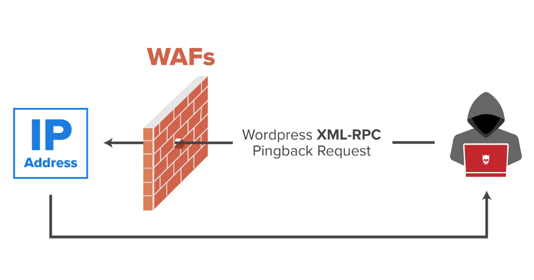

XML-RPC Pingback (Wordpress)
The
XML-RPC allows
administrators to manage their WordPress website remotely using XML Requests.
A pingback is the response of a
ping. A ping is performed when site A links to site B, then site B notifies site A that it is aware of the mention.
This is the pingback.
You can easily check if it’s enabled by calling https://www.target.com/
xmlrpc.php.
We should get the following:
XML-RPC server accepts POST requests only. Bibliography:
https://nitesculucian.github.io/2019/07/01/exploiting-the-xmlrpc-php-on-all-wordpress-versions/https://blog.detectify.com/2019/07/31/bypassing-cloudflare-waf-with-the-origin-server-ip-address/